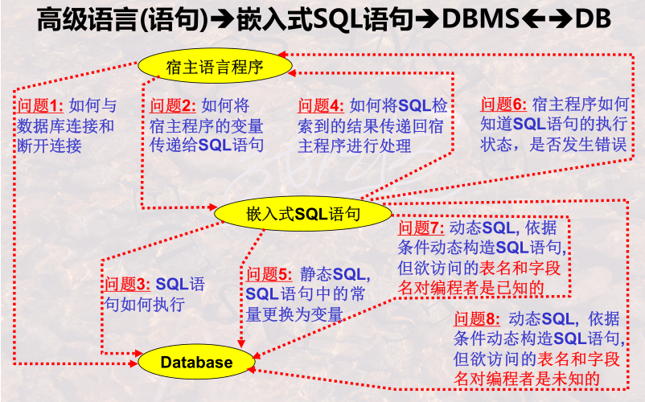

9. 嵌入式SQL语言之基本技巧
重点与难点
- 数据库语言嵌入到高级语言中使用需要解决的问题—过程及其思维
- 怎样在高级语言中处理数据集—游标的使用技巧
- 错误捕获机制—设置错误陷阱与SQLCA的作用与使用
- 事务的概念—保证数据正确性的机制
9.1 嵌入式SQL语言概述
- 交互式SQL语言的局限
- 嵌入式SQL语言、在高级语言中使用需解决的问题

9.2 变量声明与数据库连接
- 变量的声明与使用
- exec sql select Sname,Sage into :vSname, :vSage from Student where Sname = :specName;
- 数据库的连接与断开
- SQL执行的提交与撤销
- 事务的概念与特性：ACID，原子性，一致性，隔离性，持久性
- 原子性：DBMS能够保证事务的一组更新操作是原子不可分的，即 对能够保证事务的一组更新操作是原子不可分的，即对DB 而言，要么全做，要么全不做
- 一致性：DBMS保证事务的操作状态是正确的，符合一致性的操 作规则
- 隔离性：DBMS保证并发执行的多个事务之间互相不受影响。
- 持久性：DBMS保证已提交事务的影响是持久的，被撤销事务的影 响是可恢复的。
- 具有ACID特性的若干数据库基本操作的组合被称为事务
- Begin Transaction 和End Transaction两行语句是不需要的。
9.3 数据集与游标
- 单行结果，将结果直接传送到宿主程序的变量中
- 多行结果，使用游标
- 游标可以定义一次，多次打开(多次执行)，多次关闭
9.4 可滚动游标与数据库的增删改
- 可移动游标的定义与使用
- 数据库记录的删除：查找删除与定位删除
- 数据库记录的更新：查找更新与定位更新
- 数据库记录的插入：只有一种类型的插入
9.5 状态捕获及错误处理机制
状态捕获及其处理
- 设置SQL通信区sqlca
设置状态捕获语句 exec sql whenever condition action
- WHENEVER 作用范围是其后的所有Exec SQL语句直到程序中出现另一条相同条件的Whenever语句为止。
- 状态捕获语句容易引发整个程序进入无限循环
状态处理语句：隐式、显式
- DBMS记录状态信息有三种方法： (1)sqlcode；(2)sqlca.sqlcode；(3)sqlstate
9.6 习题
- 通过游标对表进行删除或者更新操作时，WHERE CURRENT OF的作用是允许更新或删除当前游标的记录
- 通过游标操纵数据库，在定义游标的查询语句时，必须加上FOR UPDATE子句
- 通过游标操纵数据库，使用FOR UPDATE子句可以修改或删除表数据